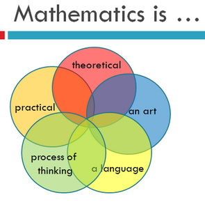
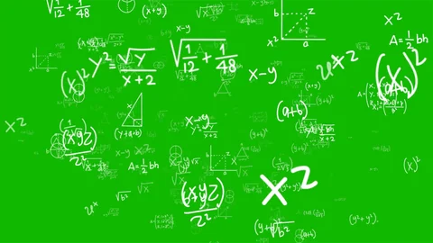
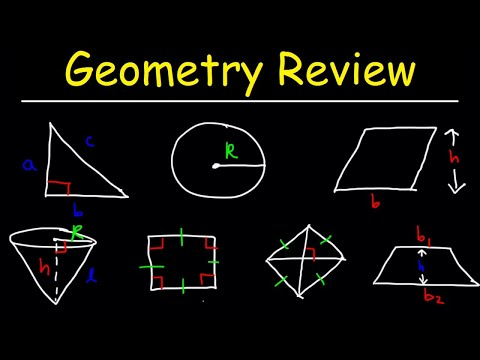
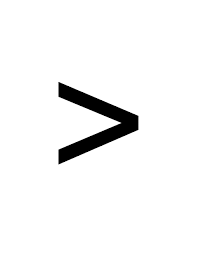
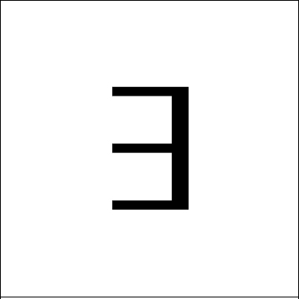
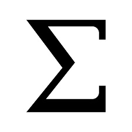

Develops algebraic concepts and skills needed to graph and solve linear equations and inequalities. Evaluating algebraic expressions and formulas according to the rules of operations is also developed. Not open to students with credit for a higher level math course. Prerequisite: ACT Math 17 or below or SAT Math 470 or below.
Mathematics is the science and study of quality, structure, space, and change. Mathematicians seek out patterns, formulate new conjectures, and establish truth by rigorous deduction from appropriately chosen axioms and definitions. There is debate over whether mathematical objects such as numbers and points exist naturally or are human creations. The mathematician Benjamin Peirce called mathematics "the science that draws necessary conclusions". Albert Einstein, on the other hand, stated that "as far as the laws of mathematics refer to reality, they are not certain; and as far as they are certain, they do not refer to reality."
An equation is a mathematical statement that is made up of two expressions connected by an equal sign. For example, 3x-5= 16 is an equation. Solving this equation, we get the value of the variable x as x = 7. Va
Geometry is the branch of mathematics that deals with shapes, angles, dimensions and sizes of a variety of things we see in everyday life. Geometry is derived from Ancient Greek words Geo means Earth and metron means measurement. In Euclidean geometry, there are two-dimensional shapes and three-dimensional shapes.
A mathematical symbol is a figure or a combination of figures that is used to represent a mathematical object, an action on mathematical objects, a relation between mathematical objects, or for structuring the other symbols that occur in a formula. As formulas are entirely constituted with symbols of various types, many symbols are needed for expressing all mathematics.
| Math symbols | |
|---|---|
| For all |
|  | Greater than |
|  | There exist |
|  | Summation |
©to author